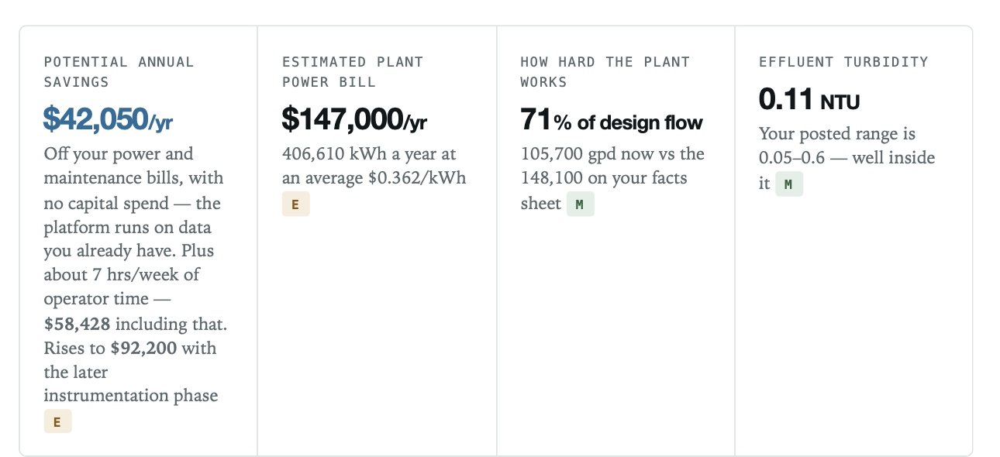
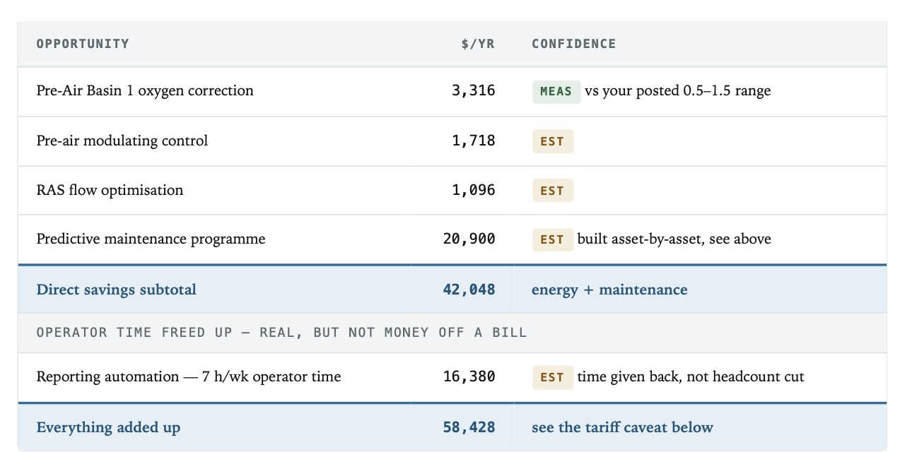
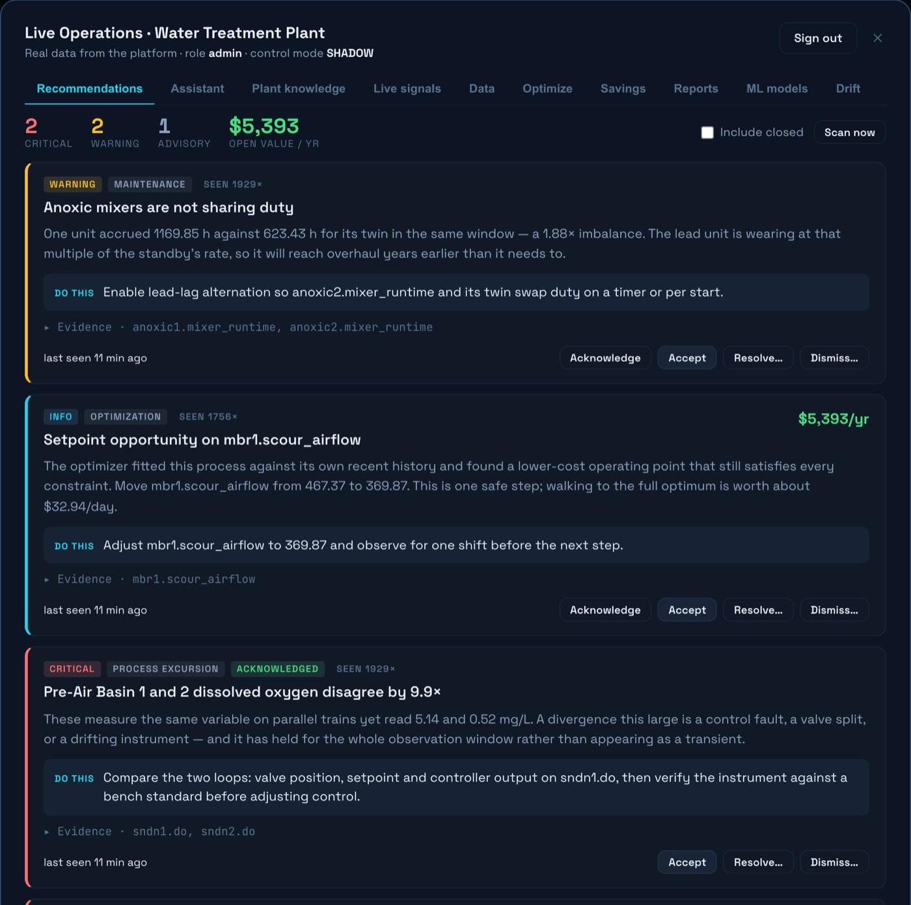

A 25-day export of a water reuse plant's historian located roughly $42,000 a year in recoverable losses without a site visit, new instruments, or a capital request. The main items were aeration energy running above the plant's own control targets, membrane scour airflow above the manufacturer's specific guidance, and pump cycling at more than twenty times the design rate.
The method is repeatable on any plant with a SCADA or DCS historian: pull an export, locate the parallel equipment pairs, compare each one's performance against the plant's own posted operating ranges, and price every gap that falls outside them. The rest of this post covers that method in detail.
That figure came entirely from the plant's existing SCADA archive: 1,001 tags, 7,172,532 recorded values, covering 28 June to 23 July.

Why a historian export is enough to start
Almost every plant already records far more than anyone reads. A SCADA historian captures every tag on a schedule, forever, and the overwhelming majority of those tags are never looked at unless something breaks. The data is not the constraint. Attention is.
Three properties make that archive useful:
- It is continuous. A lab result describes one moment. A historian describes every moment, which is the only way to see a slope rather than a point.
- It contains pairs. Plants run parallel equipment, twin basins, duty and standby pumps, two membrane trains. Equipment built to do the same job under the same conditions should behave the same way. When it stops, that divergence is a measurement in itself.
- It is already paid for. No capital request, no procurement cycle, no installation window.
The method
For each signal we model what normal looks like for that signal at that plant, rather than against a textbook range. Where the plant publishes its own operating ranges, most do on the weekly sampling schedule, those become the reference. A finding only counts as a finding if it sits outside the range the plant itself posts.
Then each item is priced, which is the part that decides whether anyone acts:
- Blower power from the isentropic relation, using measured airflow and measured discharge pressure
- Pump power from measured flow and head
- Runtime from historian totaliser deltas
- Everything converted to money using the plant's own tariff
Each line is labelled measured or estimated. Where it is an estimate, the assumptions are written down so the plant's own engineer can check the arithmetic rather than take a vendor's word for it.
Normalizing findings by output
Absolute dollar figures tell you what an opportunity is worth at one plant at one tariff. Normalizing by output tells you whether a plant is already close to its floor or has structural headroom left.
Energy intensity is the standard metric. The EPA's Energy Management Guidebook for Wastewater and Water Utilities benchmarks conventional activated sludge with secondary treatment and UV disinfection at roughly 400 to 1,000 kWh per million gallons treated, depending on nutrient removal requirements. Plants with membrane bioreactors typically run higher, in the range of 2,000 to 4,000 kWh per MG, because continuous air scouring to keep membranes permeable adds a large fixed aeration load that conventional basins do not carry. Plotting a plant's measured intensity on that distribution answers a different question than the dollar figure alone: whether an opportunity is ordinary or exceptional for a plant of that type.
The same logic extends to chemical dosing. Chlorine, polymer, and coagulant dose all should track the flow or load passing through the relevant process step. Dose per unit volume, expressed as mg/L or lb per MG in US customary units, is the trackable metric. A flat chemical dose through wide seasonal flow variation shows up clearly in normalized form. Raw dose data measured in gallons of solution pumped per day hides both overdosing and load-proportional drift.
For the MBR plant in this audit, the actual flow rate is withheld to preserve anonymity. The calculation is the same at any plant: total kWh divided by total volume treated. One month of historian data plus a flow totaliser read is enough to place a plant on the EPA benchmark curve.
What came out
One basin running 3.6x above its own posted range
The plant's sampling schedule posts pre-air dissolved oxygen at 0.5 to 1.5 mg/L. Basin 2 sat right in that band, median 0.49 mg/L. Basin 1 held a median of 5.35 mg/L on every day of the record, roughly eleven times its twin, with its blower command pinned at 99.99%.
Both basins draw on the same shared air header. That detail is what turns this from a mystery into a maintenance task: if the air supply is common and the outcomes are not, the problem is in the split, a valve or a damper, not in the control strategy. Worth $3,316 a year in blower power, plus the nitrogen-removal risk: the EPA Nutrient Control Design Manual identifies dissolved oxygen intrusion into anoxic zones as a primary cause of denitrification inefficiency, since aerobic organisms outcompete denitrifiers at elevated DO concentrations.
One caveat worth repeating: a fouled DO probe can sit on an offset and still respond to airflow changes, making it hard to distinguish a measurement artifact from a real process difference. The reading gets verified against a calibrated handheld before anyone opens a valve. How quickly DO sensors drift in activated sludge mixed liquor, and what calibration intervals are appropriate for that environment, is covered in DO sensor calibration intervals in activated sludge.
Membrane scour air above what the flux needed
Airflow tracked the permeate rate almost perfectly, R-squared of 1.00, at a ratio well above the manufacturer's specific-scour guidance. Trimming toward the guideline at the measured flux, using the controls already installed, came to $5,391 a year. That was the largest no-capital line on the list.
Pumps starting every twenty-five seconds
Reclaimed water pumps were logging 13 to 28 starts an hour against a manufacturer guideline near six for pumps that size. One asset logged 143 in an hour, a start every twenty-five seconds.
Every start draws locked-rotor current and heats the windings far more than running does. The DOE's "Improving Pumping System Performance: A Sourcebook for Industry" documents the relationship between start frequency and insulation aging: permissible starts per hour depend on motor frame size and thermal class, and the typical industrial limit for motors in the fractional to ten-horsepower range is well below what this historian was recording. This is a control deadband adjustment, not a purchase, and it was quietly writing a bill in motors, starters, and contactors: about $3,500 a year.
Sixteen of sixteen reuse totalisers frozen
Every irrigation zone has a volume totaliser. Not one of them changed in twenty-five days.
Until they record, nobody can demonstrate how much recycled water went to beneficial reuse rather than straight to disposal, which is exactly the number a reuse programme is judged on. A configuration fix rather than a purchase, and it unlocks roughly $7,300 a year.
What it added up to
| Direct savings, no capital at all | $42,050 / yr |
| Including about 7 h/week of reporting time returned | $58,428 / yr |
| Fully instrumented | $92,200 / yr |
Two subtotals are kept deliberately apart: money that comes off a bill, and operator hours given back. The hours are real, but they are not money off a bill, so they never get folded into the first number.

How to run this at your plant
The same analysis works on any SCADA or DCS historian export. Six steps:
- Pull the export. Three to six weeks covers most seasonal operating modes. IT can usually produce a CSV or Parquet pull from OSIsoft PI, Ignition, or a standard historian without a change request.
- Inventory the tags. Group them by equipment and then by process zone. The goal is not to read all 1,000 tags. It is to find the parallel equipment pairs and the flow totalizers.
- Find the paired equipment. Twin basins, duty and standby pumps, multiple filters or membrane trains all generate internal comparisons. A performance difference between units drawing on the same feed is a finding with the evidence already in the data. The mechanics of why parallel equipment diverges are covered in why parallel equipment drifts apart.
- Check against the plant's own ranges. The sampling schedule or operations manual usually publishes target ranges. A historian signal sitting outside those ranges is a priority flag, because the plant itself told you what normal looks like.
- Normalize by output. Divide energy use by treated volume in kWh/MG and chemical dose by treated volume in lb/MG or mg/L. Plot each as a time series. A rising normalized trend over weeks or months indicates process drift that periodic grab sampling will not catch.
- Price each finding. Blower and pump power from the isentropic relation or motor-rated amperage; chemical cost from unit price and dose rate; pump starts from the contactor log. Use the plant's own utility tariff. Label measured from estimated.
The sequence takes longer the first time. The second time, most of the work is steps five and six.
The caveat that matters most
Everything above is priced on a residential time-of-use schedule blending to $0.362/kWh. At 406,610 kWh a year this plant is well past residential scale and would normally sit on a commercial schedule at roughly half that blended rate.
On a commercial tariff, the same physical savings are worth about half what is shown.
The kilowatt-hours are measured either way; only their price is in question, and one utility bill settles it. We put that on the front page of the report rather than in a footnote, because showing the range is worth more than picking the flattering end of it.
What this does not tell you
A twenty-five day window in summer will not capture seasonal variation. Capital figures other than instrumentation are order-of-magnitude and need firming with quotes. And every number here is a ceiling that assumes the recommendation is actually implemented and then maintained: an identified opportunity, not a realised saving.
For context on the energy benchmarking side, the wastewater aeration energy cost post covers how to compare blower costs against facility-type benchmarks and what continuous DO monitoring changes about that math.

If your plant keeps a historian, the same exercise is available on your data. It needs an export and nothing else.
Read the full anonymised audit: a membrane-bioreactor water reuse plant.
Alex Towfigh is a founder at AquaMesh.